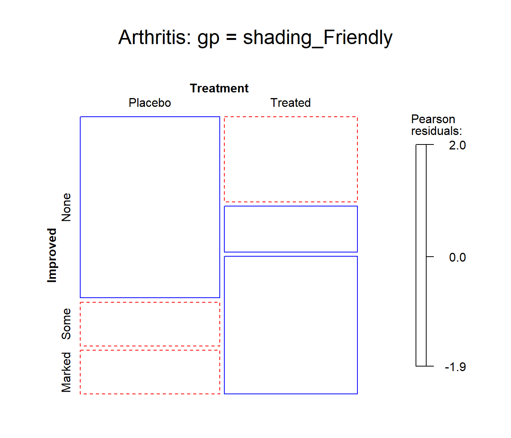

Mosaic plots provide an ideal method both for visualizing contingency tables and for visualizing the fit— or more importantly— lack of fit of a loglinear model. For a two-way table, mosaic() fits a model of independence, \([A][B]\) or ~A+B as an R formula. For \(n\)-way tables, mosaic() can fit any loglinear model, and can also be used to plot a model fit with loglm(). See Friendly (1994),vcd:Friendly:1999 for the statistical ideas behind these uses of mosaic displays in connection with loglinear models.
The essential idea is to recursively sub-divide a unit square into rectangular “tiles” for the cells of the table, such that the are area of each tile is proportional to the cell frequency. For a given loglinear model, the tiles can then be shaded in various ways to reflect the residuals (lack of fit) for a given model. The pattern of residuals can then be used to suggest a better model or understand where a given model fits or does not fit.
mosaic() provides a wide range of options for the directions of splitting, the specification of shading, labeling, spacing, legend and many other details. It is actually implemented as a special case of a more general class of displays for \(n\)-way tables called strucplot, including sieve diagrams, association plots, double-decker plots as well as mosaic plots. For details, see help(strucplot) and the “See also” links, and also Meyer, Zeileis, & Hornik (2006), which is available as an R vignette via vignette("strucplot", package="vcd").
Example: A mosaic plot for the Arthritis treatment data fits the model of independence, ~ Treatment + Improved and displays the association in the pattern of residual shading. The plot below is produced with the following call to mosaic().
data(Arthritis, package="vcd")
art <- xtabs(~Treatment + Improved, data = Arthritis)
mosaic(art, gp = shading_max,
split_vertical = TRUE,
main="Arthritis: [Treatment] [Improved]")
Mosaic plot for the Arthritis data.
gp = shading_max specifies that color in the plot signals a significant residual at a 90% or 99% significance level, with the more intense shade for 99%. Note that the residuals for the independence model were not large (as shown in the legend), yet the association between Treatment and Improved is highly significant.
summary(art)
## Call: xtabs(formula = ~Treatment + Improved, data = Arthritis)
## Number of cases in table: 84
## Number of factors: 2
## Test for independence of all factors:
## Chisq = 13.055, df = 2, p-value = 0.001463In contrast, one of the other shading schemes, from Friendly (1994) (use: gp = shading_Friendly), uses fixed cutoffs of \(\pm 2, \pm 4\), to shade cells which are individually significant at approximately \(\alpha = 0.05\) and \(\alpha = 0.001\) levels, respectively. The right panel below uses gp = shading_Friendly.
mosaic(art, gp = shading_Friendly,
split_vertical = TRUE,
main="Arthritis: gp = shading_Friendly")